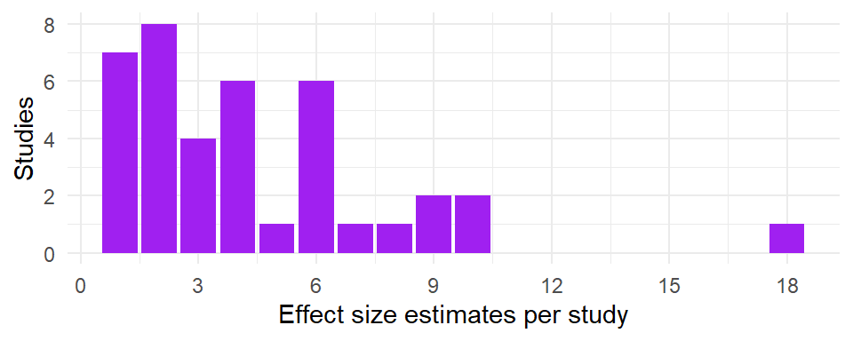
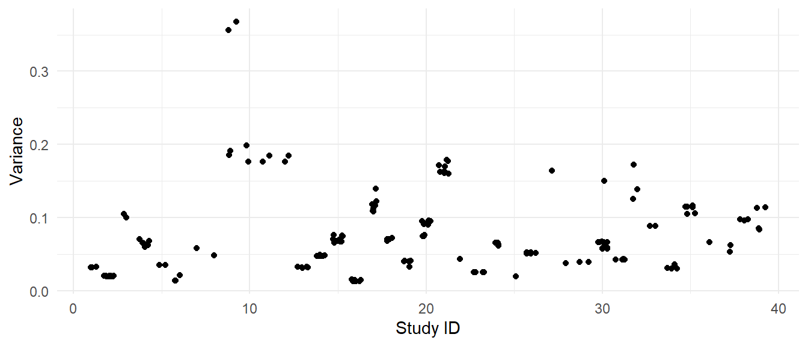
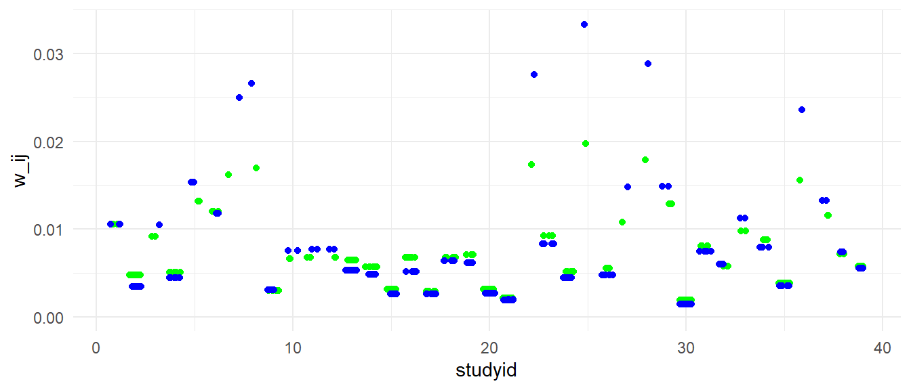
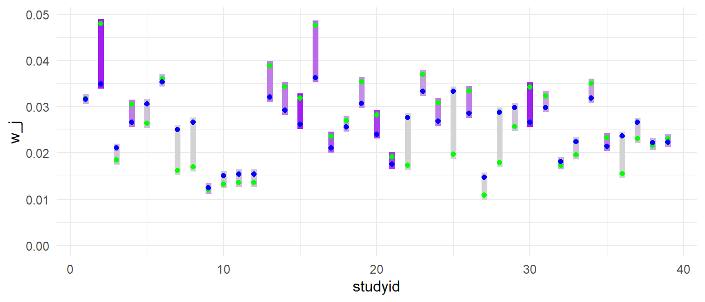

Code
library(dplyr)
data(corrdat, package = "robumeta")
corrdat <-
corrdat %>%
distinct(studyid, esid, .keep_all = TRUE)James E. Pustejovsky
June 9, 2020
One common question about multivariate/multi-level meta-analysis is how such models assign weight to individual effect size estimates. When a version of the question came up recently on the R-sig-meta-analysis listserv, Dr. Wolfgang Viechtbauer offered a whole blog post in reply, demonstrating how weights work in simpler fixed effect and random effects meta-analysis and then how things get more complicated in multivariate models. I started thumb-typing my own reply as well, but then decided it would be better to write up a post so that I could use a bit of math notation (and to give my thumbs a break). So, in this post I’ll try to add some further intuition on how weights work in certain multivariate meta-analysis models. Most of the discussion will apply to models that include multiple level of random effects, but no predictors. I’ll also comment briefly on meta-regression models with only study-level predictor variables, and finally give some pointers to work on more complicated models.
It’s helpful to start by looking briefly at the basic fixed effect and random effects models, assuming that we’ve got a set of studies that each contribute a single effect size estimate so everything’s independent. Letting \(T_j\) be the effect size from study \(j\), with sampling variance \(V_j\), both for \(j = 1,...,k\), the basic random effects model is: \[ T_j = \mu + \eta_j + e_j \] where \(\mu\) is the overall average effect size, \(v_j\) is a random effect with variance \(\text{Var}(\eta_j) = \tau^2\) and \(e_j\) is a sampling error with known variance \(V_j\). The first step in estimating this model is to estimate \(\tau^2\). There’s lots of methods for doing so, but let’s not worry about those details—just pick one and call the estimate \(\hat\tau^2\). Then, to estimate \(\mu\), we take a weighted average of the effect size estimates: \[ \hat\mu = \frac{1}{W} \sum_{j=1}^k w_j T_j, \qquad \text{where} \quad W = \sum_{j=1}^k w_j. \] The weights used in the weighted average are chosen to make the overall estimate as precise as possible (i.e., having the smallest possible sampling variance or standard error). Mathematically, the best possible weights are inverse variance weights, that is, setting the weight for each effect size estimate proportional to the inverse of how much variance there is in each estimate. With inverse variance weights, larger studies with more precise effect size estimates will tend to get more weight and smaller, noisier studies will tend to get less weight.
In the basic random effects model, the weights for each study are proportional to \[ w_j = \frac{1}{\hat\tau^2 + V_j}, \] for \(j = 1,...,k\). The denominator term here includes both the (estimated) between-study heterogeneity and the sampling variance because both terms contribute to how noisy the effect size estimate is. In the fixed effect model, we ignore between-study heterogeneity so the weights are inversely proportional to the sampling variances, with \(w_j = 1 / V_j\). In the random effects model, larger between-study heterogeneity will make the weights closer to equal, while smaller between-study heterogeneity will lead to weights that tend to emphasize larger studies with more precise estimates. In the remainder, I’ll show that there are some similar dynamics at work in a more complicated, multivariate meta-analysis model.
Now let’s consider the case where some or all studies in our synthesis contribute more than one effect size estimate. Say that we have effect sizes \(T_{ij}\), where \(i = 1,...,n_j\) indexes effect size estimates within study \(j\) and \(j\) indexes studies, for \(j = 1,...,k\). Say that effect size estimate \(T_{ij}\) has sampling variance \(V_{ij}\), and there is some sampling correlation between effect sizes \(h\) and \(i\) within study \(j\), denoted \(r_{hij}\).
There are many models that a meta-analyst might consider for this data structure. A fairly common one would be a model that includes random effects not only for between-study heterogeneity (as in the basic random effects model) but also random effects capturing within-study heterogeneity in true effect sizes. Let me write this model heirarchically, as \[ \begin{align} T_{ij} &= \theta_j + \nu_{ij} + e_{ij} \\ \theta_j &= \mu + \eta_j \end{align} \] In the first line of the model, \(\theta_j\) denotes the average effect size parameter for study \(j\), \(\nu_{ij}\) captures within-study heterogeneity in the true effect size parameters and \(e_{ij}\) is a sampling error. Above, I’ve assumed that we know the structure of the sampling errors, so \(\text{Var}(e_{ij}) = V_{ij}\) and \(\text{Cov}(e_{hj}, e_{ij}) = r_{hij} \sqrt{V_{hj} V_{ij}}\). Let’s also denote the within-study variance as \(\omega^2\), so \(\text{Var}(\nu_{ij}) = \omega^2\). In the second line of the model, \(\mu\) is still the overall average effect size across all studies and effect sizes within studies and \(\eta_j\) is a between-study error, with \(\text{Var}(\eta_j) = \tau^2\), capturing the degree of heterogeneity in the average effect sizes (the \(\theta_j\)’s) across studies.1
One thing to note about this model is that it treats all of the effect sizes as coming from a population with a common mean \(\mu\). Some statisticians might object to calling it a multivariate model because we’re not distinguishing averages for different dimensions (or variates) of the effect sizes. To this I say: whatev’s, donkey! I’m calling it multivariate because you have to use the rma.mv() function from the metafor package to estimate it. I will acknowledge, though, that there will often be reason to use more complicated models, for example by replacing the overall average \(\mu\) with some meta-regression \(\mathbf{x}_{ij} \boldsymbol\beta\). That’s a discussion for another day. For now, we’re only going to consider the model with an overall average effect size parameter \(\mu\). The question is, how do the individual effect size estimates \(T_{ij}\) contribute to the estimate of this overall average effect?
To make some headway, it is helpful to first consider an even more specific model where, within a given study, all effect size estimates are equally precise and equally correlated. In particular, let’s assume that for each study \(j\), the sampling variances are all equal, with \(V_{ij} = V_j\) for \(i = 1,...,n_j\), and the correlations between the sampling errors are also all equal, with \(r_{hij} = r_j\) for \(h,i = 1,...,n_j\).
These assumptions might not be all that far-fetched. Within a given study, if the effect size estimates are for different measures of a common construct, it’s not unlikely that they would all be based on similar sample sizes (+/- a bit of item non-response). It might be a bit less likely if the effect size estimates are for treatment effects from different follow-up times (since drop-out/non-response tends to increase over time) or different treatment groups compared to a common control group—but still perhaps not entirely unreasonable. Further, it’s rather uncommon to have good information about the correlations between effect size estimates from a given study (because primary studies don’t often report all of the information needed to calculate these correlations). In practice, meta-analysts might need to simply make a rough guess about the correlations and then use robust variance estimation and/or sensitivity analysis to check themselves. And if we’re just ball-parking, then we’ll probably assume a single correlation for all of the studies.
The handy thing about this particular scenario is that, because all of the effect size estimates within a study are equally precise and equally correlated, the most efficient way to estimate an average effect for a given study is to just take the simple average (and, intuitively, this seems like the only sensible thing to do). To be precise, consider how we would estimate \(\theta_j\) for a given study \(j\). The most precise possible estimate is simply \[ \hat\theta_j = \frac{1}{n_j} \sum_{i=1}^{n_j} T_{ij}. \] And we could do the same for each of the other studies, \(j = 1,...,k\). It turns out that the estimate of the overall average effect size is a weighted average of these study-specific average effect sizes: \[ \hat\mu = \frac{1}{W} \sum_{j=1}^k w_j \hat\theta_j, \] for some weights \(w_1,...,w_k\). But what are these weights? Just like in the basic random effects model, they are inverse-variance weights. It’s just that the variance is a little bit more complicated.
Consider how precise each of the study-specific estimates are, relative to the true effects in their respective studies. Conditional on the true effect \(\theta_j\), \[ \text{Var}(\hat\theta_j | \theta_j) = \frac{1}{n_j}\left(\omega^2 + (n_j - 1) r_j V_j + V_j\right). \] Without conditioning on \(\theta_j\), the variance of the \(\hat\theta_j\) estimates also includes a term for variation in the true study-specific average effect sizes, becoming \[ \text{Var}(\hat\theta_j) = \tau^2 + \frac{1}{n_j}\left(\omega^2 + (n_j - 1) r_j V_j + V_j\right). \] The weights used in estimating \(\mu\) are the inverse of this quantity: \[ w_j = \frac{1}{\tau^2 + \frac{1}{n_j}\left(\omega^2 + (n_j - 1) r_j V_j + V_j\right)}. \] Within a study, each individual effect size gets an \(n_j^{th}\) of this study-level weight. We can therefore write the overall average as \[ \hat\mu = \frac{1}{W} \sum_{j=1}^k \sum_{i=1}^{n_j} w_{ij} T_{ij}, \] where \[ w_{ij} = \frac{1}{n_j \tau^2 + \omega^2 + (n_j - 1) r_j V_j + V_j}. \]
There are several things worth noting about this expression for the weights. First, suppose that there is little between-study or within-study heterogeneity, so \(\tau^2\) and \(\omega^2\) are both close to zero. Then the weights are driven by the number of effect sizes within the study (\(n_j\)), the sampling variance of those effect sizes (\(V_j\)) and their correlation \(r_j\). If \(r_j\) is near one, then averaging together a bunch of highly correlated estimates doesn’t improve precision much, relative to just using one of the effect sizes. The study-specific average effect estimate will therefore have variance close to \(V_j\) (i.e., the variance of a single effect size estimate). If \(r_j\) is below one, then averaging yields a more precise estimate than any of the individual effect sizes, and averaging together more effect sizes will yield a more precise estimate at the study level. If the assumed correlations are reasonably accurate, the weights used in the multi-variate meta-analysis will appropriately take into account the number of effect sizes within each study and the precision of those effect sizes.
Second, now suppose that there is no between-study heterogeneity (\(\tau^2 = 0\)) but there is positive within-study heterogeneity. Larger degrees of within-study heterogeneity will tend to equalize the weights at the effect size level, regardless of how effect size estimates are nested within studies. When there is within-study heterogeneity, averaging together a bunch of estimates will yield a more precise estimate of study-specific average effects. Therefore, when \(\omega^2\) is larger, studies with more effect sizes will tend to get a relatively larger share of the weight.2
Third and finally, between-study heterogeneity will tend to equalize the weights at the study level, so that the overall average is pulled closer to a simple average of the study-specific average effects. This works very much like in basic random effects meta-analysis, where increased heterogeneity will lead to weights that are closer to equal and an average effect size estimate that is closer to a simple average.
I think it’s useful to verify algebraic results like the ones I’ve given above by checking that you can reproduce them with real data. I’ll use the corrdat dataset from the robumeta package for illustration. The dataset has one duplicated row in it (I have no idea why!), which I’ll remove before analyzing further.
This dataset included a total of 171 effect size estimates from 39 unique studies. For each study, between 1 and 18 eligible effect size estimates were reported. Here is a histogram depicting the number of studies by the number of reported effect size estimates:

Here is the plot of the variances of each effect size versus the study IDs:

For most of the studies, the effect sizes have very similar sampling variances. One exception is study 9, where two of the effect sizes have variances of under 0.20 and the other two effect sizes have variances in excess of 0.35. Another exception is study 30, which has one effect size with much larger variance than the others.
Just for sake of illustration, I’m going to enforce my assumption that effect sizes have equal variances within each study by recomputing the sampling variances as the average sampling variance within each study. I will then impute a sampling variance-covariance matrix for the effect sizes, assuming a correlation of 0.7 for effects from the same study:
With this variance-covariance matrix, I can then estimate the multivariate meta-analysis model:
Multivariate Meta-Analysis Model (k = 171; method: REML)
logLik Deviance AIC BIC AICc
-94.7852 189.5703 195.5703 204.9777 195.7149
Variance Components:
estim sqrt nlvls fixed factor
sigma^2.1 0.0466 0.2159 39 no studyid
sigma^2.2 0.1098 0.3314 171 no studyid/esid
Test for Heterogeneity:
Q(df = 170) = 1141.4235, p-val < .0001
Model Results:
estimate se zval pval ci.lb ci.ub
0.2263 0.0589 3.8413 0.0001 0.1108 0.3417 ***
---
Signif. codes: 0 '***' 0.001 '**' 0.01 '*' 0.05 '.' 0.1 ' ' 1Based on this model, between-study heterogeneity is estimated as \(\hat\tau = 0.216\) and within-study heterogeneity is estimated as \(\hat\omega = 0.331\), both of which are quite high. The overall average effect size estimate is 0.226, with a standard error of 0.059.
I’ll first get the weights used in rma.mv to compute the overall average. The weights are represented as an \(N \times N\) matrix. Taking the row or column sums, then rescaling by the total, gives the weight assigned to each effect size estimate:
To verify that the formulas above are correct, I’ll use them to directly compute weights:
The weights I computed are perfectly correlated with the weights used rma.mv, as can be seen in the plot below.
If we remove the within-study random effect term from the model, the weights will be equivalent to setting \(\omega^2\) to zero, but with a different estimate of \(\tau^2\).
Multivariate Meta-Analysis Model (k = 171; method: REML)
Variance Components:
estim sqrt nlvls fixed factor
sigma^2 0.0951 0.3084 39 no studyid
Test for Heterogeneity:
Q(df = 170) = 1141.4235, p-val < .0001
Model Results:
estimate se zval pval ci.lb ci.ub
0.2235 0.0619 3.6122 0.0003 0.1022 0.3448 ***
---
Signif. codes: 0 '***' 0.001 '**' 0.01 '*' 0.05 '.' 0.1 ' ' 1Re-fitting the model with rma.mv() gives an between-study heterogeneity estimate of \(\hat\tau = 0.308\) and an overall average effect size estimate of \(\hat\mu = 0\). Using this estimate, I’ll compute the weights based on the formula and then use those weights to determine the overall average effect size estimate.
[1] 0.2235231This matches the output of rma.mv().
Here is a plot showing the weights of individual effect sizes for each study. In blue are the weights under the assumption that \(\omega^2 = 0\). In green are the weights allowing for \(\omega^2 > 0\). It’s notable here that introducing the within-study heterogeneity term leads to pretty big changes in the weights for some studies. In particular, studies that have only a single effect size estimate (e.g., studys 7, 8, 22, 25, 28) lose a lot of weight when \(\omega^2 > 0\). That’s partially because \(\omega^2\) tends to pull weight towards studies with more effect sizes, and partially because of the change in the estimate of \(\tau^2\), which tends to equalize the weight assigned to each study.

Below is a plot illustrating the changes in study-level weights (i.e., aggregating the weight assigned to each study). The bar color corresponds to the number of effect size estimates in each study; light grey studies have just one effect size, while studies with more effect sizes are more intensly purple. The notable drops in weight for studies with a single effect size estimate (light grey) are visible here too. Studies with more effect sizes (e.g., studies 2, 15, 30, with dark purple bars) gain weight when we allow \(\omega^2\) to be greater than zero.

If we remove the restrictions that effect sizes from the same study have the same sampling variance and are equi-correlated, then the weights get a little bit more complicated. However, the general intuitions carry through. Let’s now consider the model with arbitrary sampling variance \(V_{ij}\) and sampling correlations within studies \(r_{hij}\). The most efficient estimate of the study-specific average effect is now a weighted average, with weights that depend on both the variances and covariances of the effect size estimates within each study. Let \[ \boldsymbol{\hat\Sigma}_j = \hat\omega^2 \mathbf{I}_j + \mathbf{V}_j, \] where \(\mathbf{I}_j\) is an \(n_j \times n_j\) identity matrix and \(\mathbf{V}_j\) is the sampling variance-covariance matrix of the effect size estimates, with entry \((h,i)\) equal to \(\left[\mathbf{V}_j\right]_{h,i} = r_{hij} \sqrt{V_{hj} V_{ij}}\). The estimate of the study-specific average effect size for study \(j\) is still a weighted average: \[ \hat\theta_j = \frac{\sum_{i=1}^{n_j} s_{ij} T_{ij}}{\sum_{i=1}^{n_j} s_{ij}}, \] where \[ s_{ij} = \displaystyle{\sum_{h=1}^{n_j} \left[\boldsymbol{\hat\Sigma}^{-1}\right]_{hi}}, \] and \(\left[\boldsymbol{\hat\Sigma}^{-1}\right]_{hi}\) denotes entry \((h,i)\) in the inverse of the matrix \(\boldsymbol{\hat\Sigma}\). Let \(V^C_j\) denote the variance of the study-specific average effect size estimate, conditional on the true \(\theta_j\): \[ V^C_j = \text{Var}(\hat\theta_j | \theta_j) = \left(\sum_{i=1}^{n_j} s_{ij} \right)^{-1} \] The unconditional variance of \(\hat\theta_j\) is then \[ \text{Var}(\hat\theta_j) = \tau^2 + V^C_j. \] Because the overall average effect size estimate is (still) the inverse-variance weighted average, the weight assigned at the study level is equal to \[ w_j = \frac{1}{\hat\tau^2 + V^C_j} \] and the weight assigned to individual effect sizes is \[ w_{ij} = \frac{s_{ij} V^C_j}{\hat\tau^2 + V^C_j}. \] How do \(\omega^2\) and \(\tau^2\) affect these more general weights? The intuitions that I described earlier still mostly hold. Increasing \(\omega^2\) will tend to equalize the weights at the effect size level (i.e., equalize the \(s_{ij}\) across \(i\) and \(j\)), pulling weight towards studies with more effect size estimates. Increasing \(\tau^2\) will tend to equalize the weights at the study-level.
One wrinkle with the more general form of the weights is that the effect-size level weights can sometimes be negative (i.e., negative \(s_{ij}\)). This will tend to happen when the sampling variances within a study are discrepant, such as when one \(V_{ij}\) is much smaller than the others in study \(j\), when the (assumed or estimated) sampling correlation is high, and when \(\omega^2\) is zero or small. This is something that warrants further investigation.
Some of the foregoing analysis also applies to models that include predictors. In particular, the formulas I’ve given for the weights will still hold for meta-regression models that include only study-level predictors. In other words, they work for models of the following form: \[ T_{ij} = \mathbf{x}_j \boldsymbol\beta + \eta_j + \nu_{ij} + e_{ij}, \] where \(\mathbf{x}_j\) is a row-vector of one or more predictors for study \(j\) (including a constant intercept). Introducing these predictors will alter the variance component estimates \(\hat\tau^2\) and \(\hat\omega^2\), but the form of the weights will remain the same as above, and the intuitions still hold. This is because, for purposes of estimating \(\boldsymbol\beta\), the model is essentially the same as a meta-regression at the study level, using the study-specific average effect size estimates as input: \[ \hat\theta_j = \mathbf{x}_j \boldsymbol\beta + \eta_j + \tilde{e}_j \] where \(\text{Var}(\tilde{e}_j) = \text{Var}(\hat\theta_j | \theta_j)\).3
Here is an illustration with the corrdat meta-analysis. In these data, the variable college indicates whether the effect size comes from a college-age sample; it varies only at the study level. The variable males, binge, and followup have some within-study variation, which I’ll by taking the average of each of these predictors at the study level:
Now let’s fit a meta-regression model using all of the study-level predictors:
Multivariate Meta-Analysis Model (k = 171; method: REML)
logLik Deviance AIC BIC AICc
-86.6244 173.2488 187.2488 209.0327 187.9577
Variance Components:
estim sqrt nlvls fixed factor
sigma^2.1 0.0297 0.1723 39 no studyid
sigma^2.2 0.1068 0.3268 171 no studyid/esid
Test for Residual Heterogeneity:
QE(df = 166) = 1083.6655, p-val < .0001
Test of Moderators (coefficients 2:5):
QM(df = 4) = 13.0787, p-val = 0.0109
Model Results:
estimate se zval pval ci.lb ci.ub
intrcpt -0.0361 0.3678 -0.0982 0.9218 -0.7571 0.6849
college 0.2660 0.1384 1.9215 0.0547 -0.0053 0.5373 .
males_M 0.0023 0.0048 0.4753 0.6346 -0.0072 0.0118
binge_M 0.3441 0.1570 2.1927 0.0283 0.0365 0.6518 *
followup_M -0.0023 0.0011 -2.0379 0.0416 -0.0044 -0.0001 *
---
Signif. codes: 0 '***' 0.001 '**' 0.01 '*' 0.05 '.' 0.1 ' ' 1As you might expect, between-study heterogeneity is reduced a bit by the inclusion of these predictors.4
We can check my claim of computational equivalence by fitting the meta-regression model at the study level. Here I’ll aggregate everything up to the study level and compute the study-level weights:
tau_sq_reg <- MVMR_fit$sigma2[1]
omega_sq_reg <- MVMR_fit$sigma2[2]
corrdat_studylevel <-
corrdat %>%
group_by(studyid) %>%
mutate(n_j = n()) %>%
summarize_at(vars(effectsize, n_j, V_bar, college, binge_M, followup_M, males_M), mean
) %>%
mutate(
V_cond = (omega_sq_reg + (n_j - 1) * r * V_bar + V_bar) / n_j,
w_j = 1 / (tau_sq_reg + V_cond)
)Now I can fit a study-level meta-regression model. I use the weights argument to ensure that the meta-regression is estimated using the \(w_j\) weights:
Mixed-Effects Model (k = 39; tau^2 estimator: REML)
logLik deviance AIC BIC AICc
-13.0651 26.1303 38.1303 47.2884 41.2414
tau^2 (estimated amount of residual heterogeneity): 0.0297 (SE = 0.0264)
tau (square root of estimated tau^2 value): 0.1723
I^2 (residual heterogeneity / unaccounted variability): 26.89%
H^2 (unaccounted variability / sampling variability): 1.37
R^2 (amount of heterogeneity accounted for): 37.90%
Test for Residual Heterogeneity:
QE(df = 34) = 46.5050, p-val = 0.0748
Test of Moderators (coefficients 2:5):
QM(df = 4) = 13.0787, p-val = 0.0109
Model Results:
estimate se zval pval ci.lb ci.ub
intrcpt -0.0361 0.3678 -0.0982 0.9218 -0.7571 0.6849
college 0.2660 0.1384 1.9215 0.0547 -0.0053 0.5373 .
males_M 0.0023 0.0048 0.4753 0.6346 -0.0072 0.0118
binge_M 0.3441 0.1570 2.1927 0.0283 0.0365 0.6518 *
followup_M -0.0023 0.0011 -2.0379 0.0416 -0.0044 -0.0001 *
---
Signif. codes: 0 '***' 0.001 '**' 0.01 '*' 0.05 '.' 0.1 ' ' 1The meta-regression coefficient estimates are essentially identical to those from the multi-variate meta-regression, although the between-study heterogeneity estimate differs slightly because it is based on maximizing the single-level model, conditional on an estimate of \(\omega^2\).
In true multi-variate models, the meta-regression specification would typically include indicators for each dimension of the model. More generally, we might have a model that includes predictors varying within study, encoding characteristics of the outcome measures, sub-groups, or treatment conditions corresponding to each effect size estimate. The weights in these model get substantially more complicated, not in the least because the weights are specific to the predictors. For instance, in a model with four within-study predictors, a different set of weights is used in estimating the coefficients corresponding to each predictor. As Dr. Richard Riley noted on Twitter, relevant work on more complicated models includes this great paper by Dan Jackson and colleagues and this paper by Riley and colleagues. The latter paper demonstrates how multivariate models entail partial “borrowing of strength” across dimensions of the effect sizes, which is very helpful for building intuition about how these models work. I would encourage you to check out both papers if you are grappling with understanding how weights work in complex meta-regression models.
Note that this model also encompasses the multi-level meta-analysis described by Konstantopoulos (2011) and Van den Noortgate, et al. (2013) as a special case, with \(r_{hij} = 0\) for all \(h,i=1,...,n_j\) and \(j = 1,...,k\).↩︎
Perhaps that makes sense, if you’ve carefully selected the set of effect sizes for inclusion in your meta-analysis. However, it seems to me that it could sometimes lead to perverse results. Say that all studies but one include just a single effect size estimate, each using the absolute gold standard approach to assessing the outcome, but that one study took a “kitchen sink” approach and assessed the outcome a bunch of different ways, including the gold standard plus a bunch of junky scales. Inclusion of the junky scales will lead to within-study heterogeneity, which in turn will pull the overall average effect size towards this study—the one with all the junk! That seems less than ideal, and the sort of situation where it would be better to select from the study with multiple outcomes the single effect size estimate based on the outcome assessment that most closely aligns with the other studies.↩︎
Things get even simpler if the model does not include within-study random effects, as I discussed in a previous post.↩︎
However, this need not be the case—it’s possible that introducing between-study predictors could increase the estimate of between-study heterogeneity. Yes, that’s totally counter-intuitive. Multi-level models can be weird.↩︎
@online{pustejovsky2020,
author = {Pustejovsky, James E.},
title = {Weighting in Multivariate Meta-Analysis},
date = {2020-06-09},
url = {https://mellifluous-buttercream-e2edd2.netlify.app/posts/weighting-in-multivariate-meta-analysis},
langid = {en}
}